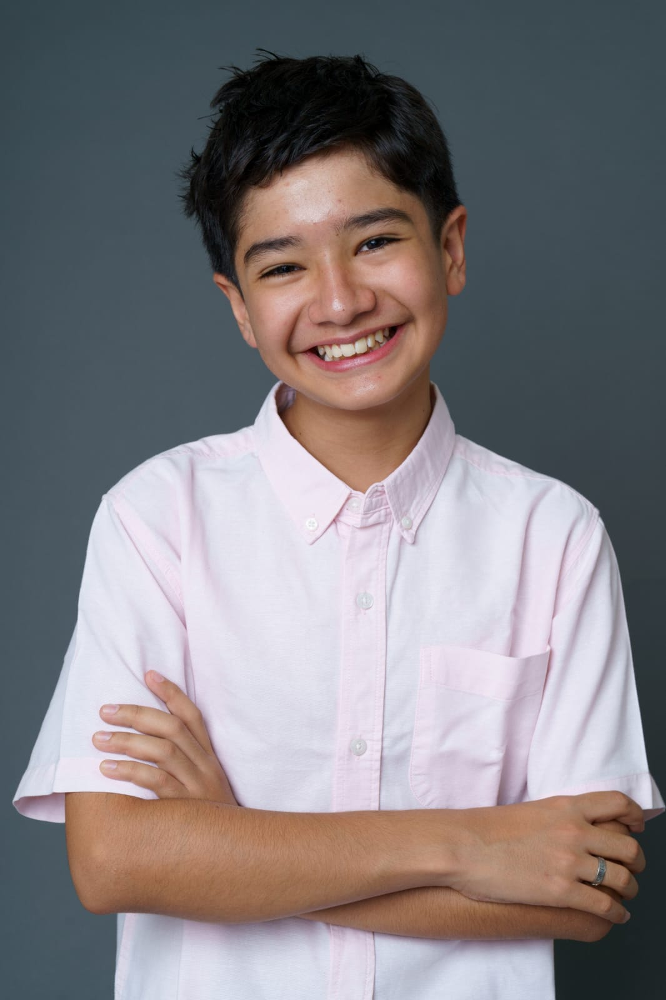

Luis Solis
Actor • Narrador

Actor • Narrador

Doblaje / Voz en Off
Participación en el doblaje para Nickelodeon (SpongeBob), demostrando versatilidad vocal y capacidad para dar vida a personajes animados en producciones internacionales.
Campañas Comerciales
Presentado en anuncios nacionales para Nescafé (Mundial de Qatar), Banco Azteca y Dole Packaged Foods. Comprobada capacidad de contratación para campañas de grandes mercados.
Cortometraje
Un cortometraje narrativo de 10 minutos que destaca las capacidades de narración de formato largo y la presencia cinematográfica.